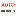
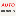
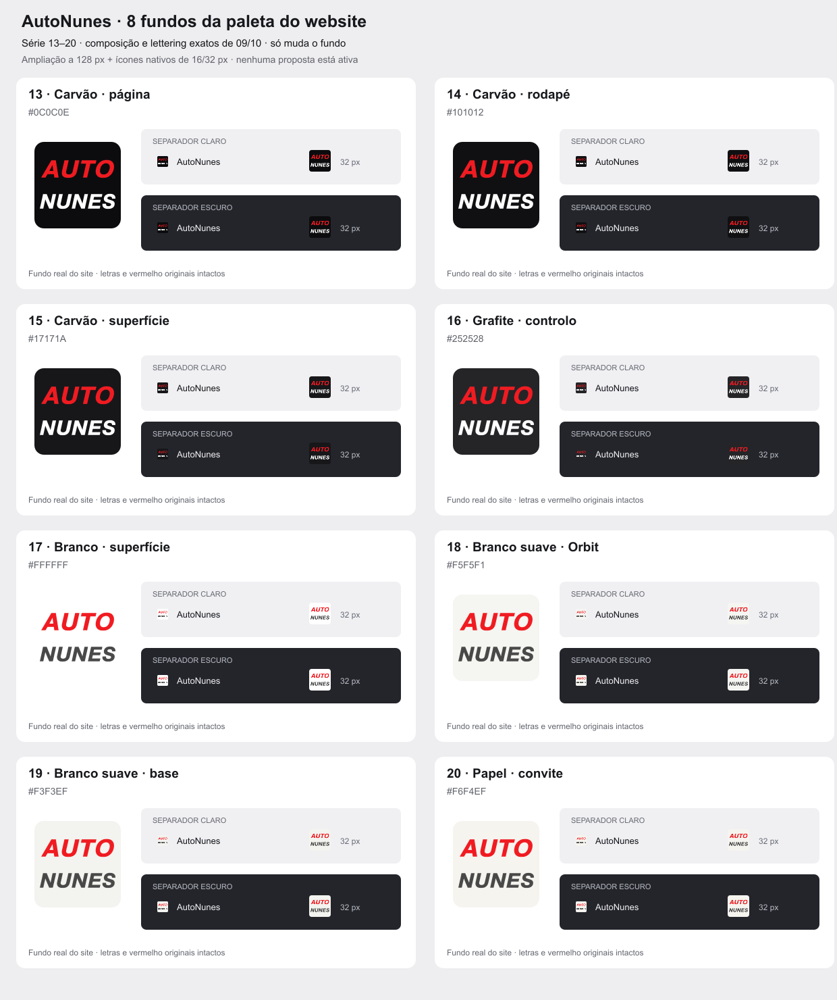

13 · Carvão · página
#0C0C0E · --bg: #0c0c0e
AutoNunes 32 px
AutoNunes 32 px
Oito fundos retirados das cores reais do website. A composição AUTO / NUNES, o lettering e o vermelho são os mesmos das opções 09/10. Só muda a cor de fundo.
Nenhuma proposta está ativa e não foi implementada troca automática com o tema. Ver os exemplos nativos a 100% de zoom: a leitura a 16 px continua limitada pelo tamanho, sem substituir o nome por iniciais.
#0C0C0E · --bg: #0c0c0e
#101012 · background: #101012
#17171A · --surface: #17171a
#252528 · background: #252528
#FFFFFF · --surface: #fff;
#F5F5F1 · --bg: #f5f5f1

AutoNunes 32 px#F3F3EF · --bg: #f3f3ef
#F6F4EF · background: #f6f4ef

AutoNunes 32 px